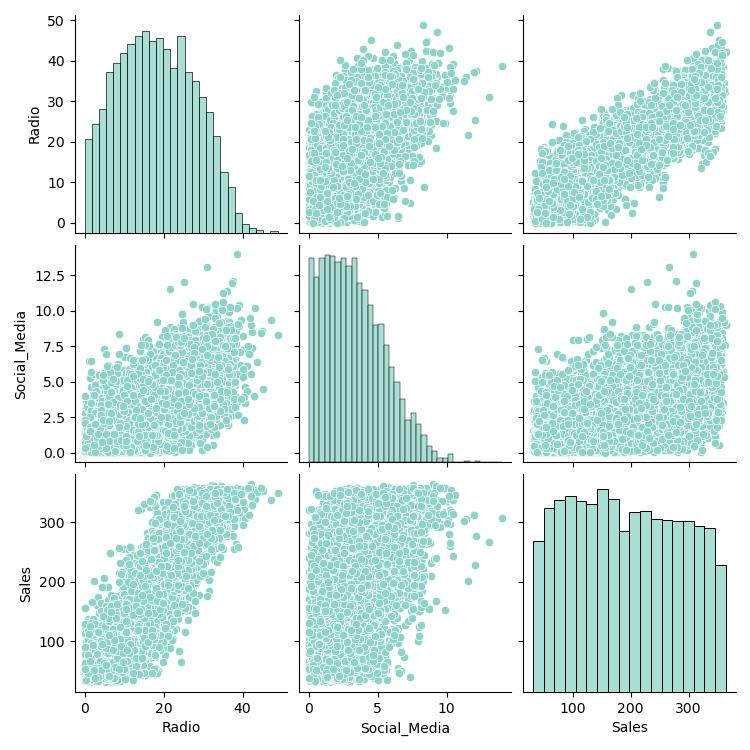

Python || Multiple linear regression: Historical marketing promotion data
Multiple linear regression helps you estimate the linear relationship between one continuous dependent variable and two or more independent variables. For data science professionals, this is a useful skill because it allows you to compare more than one variable to the variable you're measuring against. This provides the opportunity for much more thorough and flexible analysis.
In this project will be analyzing a small business' historical marketing promotion data. Each row corresponds to an independent marketing promotion where their business uses TV, social media, radio, and influencer promotions to increase sales.
To address the business' request, I will conduct a multiple linear regression analysis to estimate sales from a combination of independent variables. This will include:
- Exploring and cleaning data
- Using plots and descriptive statistics to select the independent variables
- Creating a fitting multiple linear regression model
- Interpreting model outputs and communicating the results to non-technical stakeholders
Familiarize with the data's features
- TV promotional budget (in "Low," "Medium," and "High" categories)
- Social media promotional budget (in millions of dollars)
- Radio promotional budget (in millions of dollars)
- Sales (in millions of dollars)
- Influencer size (in "Mega," "Macro," "Micro," and "Nano" categories)
Check out the process and code c:
Conclusions
- TV was selected, as the preceding analysis showed a strong relationship between the TV promotional budget and the average Sales.
- Radio was selected because the pairplot showed a strong linear relationship between Radio and Sales.
- Social Media was not selected because it did not increase model performance and it was later determined to be correlated with another independent variable: Radio.
- Influencer was not selected because it did not show a strong relationship to Sales in the preceding analysis.
- Fitting multiple linear regression models may require trial and error to select variables that fit an accurate model while maintaining model assumptions.
- According to the model, high TV promotional budgets result in significantly more sales than medium and low TV promotional budgets. Thus, it is recommended that the business allot a high promotional budget to TV when possible and invest in radio promotions to increase sales.